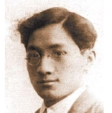

徐志摩（1897-1931），笔名南湖、云中鹤、仙鹤、鹤、海谷、谷、大兵、黄狗、删我、心乎等。浙江海宁人。新月派代表诗人、散文家。
1915年毕业于杭州一中、先后就读于上海沪江大学、天津北洋大学和北京大学。1918年赴美国学习银行学。1921年赴英国留学，入伦敦剑桥大学当特别生，研究政治经济学。在剑桥两年深受西方教育的熏陶及欧美浪漫主义和唯美派诗人的影响。
徐志摩1921年开始创作新诗。1922年返国后在《学灯》（上海《时事新报》副刊）、《小说月报》、《晨报副刊》等报刊上发表大量诗文。1923年，参与发起成立新月社。加入文学研究会。1924年与胡适、陈西滢等创办《现代评论》周刊，任北京大学教授。印度大诗人泰戈尔访华时任翻译。1925年赴欧洲、游历苏、德、意、法等国。1926年在北京主编《晨报》副刊《诗镌》，这一年是他创作最多的一年，写了诗集《翡冷翠的一夜》和散文集《巴黎的鳞爪》、《自剖》、《落叶》中的大部分作品。他与闻一多、朱湘等人开展新诗格律化运动，有力地推动了新诗艺术的发展。同年移居上海，任光华大学、大夏大学和南京中央大学教授。1927年参加创办新月书店。次年《新月》月刊创刊后任主编。并出国游历英、美、日、印诸国。1930年任中华文化基金委员会委员，被选为英国诗社社员。同年冬到北京大学与北京女子大学任教。1931年初，与陈梦家、方玮德创办《诗刊》季刊，被推选为笔会中国分会理事。8月，第三本诗集《猛虎集》出版。同年11月19日，由南京乘飞机到北平，因遇雾在济南附近触山，机坠身亡。
出版的诗集有《志摩的诗》（1925）、《翡冷翠的一夜》（1927）、《猛虎集》（1931）、《云游》（1932）。其他著作有散文集《落叶》(1926)、《自剖》(1928)、《巴黎的鳞爪》(1927)、《秋》(1931)，小说集《轮盘》(1930)、戏剧《卞昆冈》（1928，与陆小曼合作），日记《爱眉小札》（1936）、《志摩日记》(1947)。译著有《涡堤孩》(1923)、《死城》(1925)、《曼殊斐尔小说集》(1927)、《赣第德》(1927)、《玛丽玛丽》（1927，与沈性仁合译）。1948年商务印书馆排印《志摩遗集》5集8卷，校样本今存北京图书馆。陈从周1948年编印的《徐志摩年谱》，上海书店1981年复印。台北远东图书公司1974年出版有梁实秋的《谈徐志摩》，台北联经出版事业公司1979年出版梁锡华著《徐志摩新传》。
雪花的快乐
为要寻找一个明星
半夜深巷琵琶
再别康桥
残诗